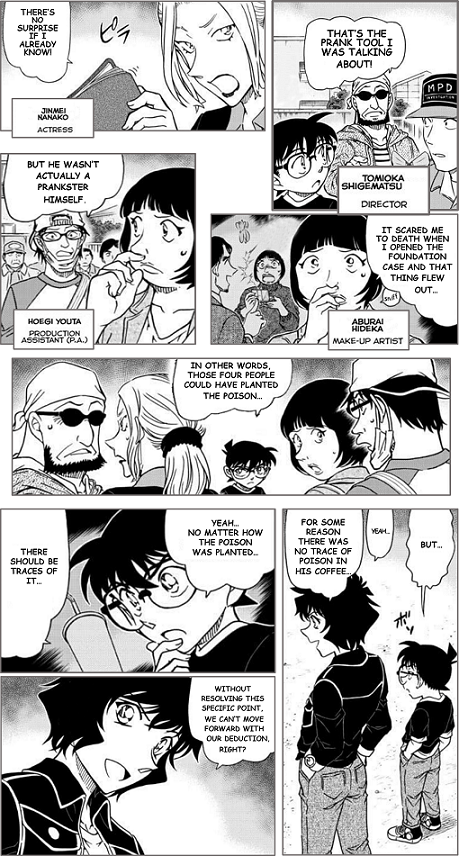

Abstract: We introduce a novel approach to synthesize realistic speeches for comics. Using a comic page as input, our approach synthesizes speeches for each comic character in a lively and engaging manner following the reading flow. It adopts a cascading strategy to synthesize a speech in two stages: Comic Visual Analysis and Comic Speech Synthesis. In the first stage, it analyzes the input comic page to identify the gender and age of the comic characters, as well as the texts each character speaks and the corresponding speaking emotion. Guided by such an analysis, our approach synthesizes realistic speeches for each character in the second stage that are consistent with the visual observations. In our experiments, we show that the proposed approach can synthesize realistic and lively speeches for different types of comics. Perceptual studies performed on the synthesis results of multiple example comics validate the efficacy of our approach.
Contents
We applied our approach for synthesizing speeches for four comic pages, which cover different themes and styles.
© Jim Mccann, Diego Olortegui, In-Hyuk Lee / Marvel Comics Inc.
| ||
Note: the reading flow of Janpanese Manga is from right to left and from top to bottom.
© Gosho Aoyama / VIZ Media LLC (English)
|  | ||
© Joanna Cole, Bruce Degen / Netflix Inc.
 | ||
© Cassandra Calin
In addition, we demonstrate how our approach can be applied to tackle several common scenarios in comics narration:
The same speech text can be spoken with different emotions as inferred from the different facial expressions.
| Text: How to draw comics when I can't actually draw. |
The same speech text can be spoken in different degrees of the same emotion. In the first case, the three characters speak the same speech text with different degrees of anger as inferred from their facial expressions. In the second case, the three characters speak the same speech text with different degrees of sad as inferred from their facial expressions.
Part 1: Different Comic Characters with Same Speech Text
| Text: You really caught our attention. |
| Text: Why do you want to break up with her? |
Part 2: Same Comic Character with Different Speech Texts
| Text: I didn't mean it that way. |
| Text: You see, I have been trying since the very beginning. |
| Text: I'm sorry for your loss. |
Speech texts can be spoken with different combined emotions as inferred from the characters’ faces and their speech texts. For example, a speech text can be spoken with emotion states fearful and sad, or fearful and angry.
| Text: This does not suppose to be this way. |
| Text: Are you sure to do that? |
We compare the synthesized comic speeches of our approach with the The compared approaches consist of our approach, professional narration, and user generation (i.e., Tacotron text-to-speech techniques and audio editing tools like CoolEdit). We use the educational comics "The Magic School Bus Rides Again" (© Joanna Cole, Bruce Degen / Netflix Inc.) to conduct this experiment.
|
Oh, the forest, where since the beginning of time people have come for peace and tranquility. |
||
|
Shh, I'm trying to hear the trees you guys. |
||
|
Please, please. Say something. |
||
|
I knew it. Nothing to hear here. |
||
|
Untrue. I hear animal noises. |
||
|
But is that noise or is it communication between animals? |
|
|
Noises sound without meaning. |
||
|
And communication is about sending a message. |